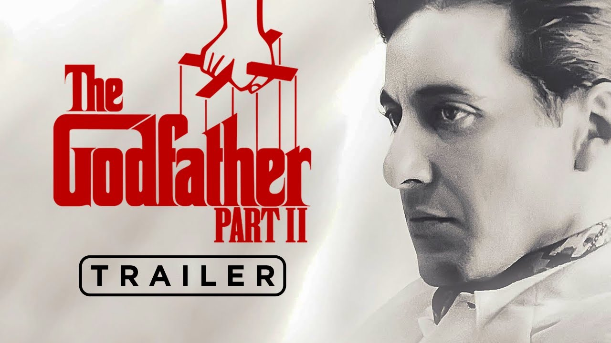

Puntuación
 8.6
8.6
 9/10
9/10
Título original: The Godfather Part II Estreno: 1974 Duración: 3h 22min Se retratan los inicios de la vida y la carrera de Vito Corleone en el Nueva York de los años 20, mientras su hijo, Michael, amplía y refuerza su control sobre el sindicato del crimen familiar. Tras la muerte de Don Vito Corleone, su hijo Michael es elegido para liderar los negocios familiares. El nuevo cabeza de familia debe lidiar con un panorama cambiante de amistades y enemistades, al tener que negociar con la mafia judía y perder el apoyo de Frankie. Al mismo tiempo, Michael escapa por los pelos de un atentado. Simultáneamente, se recuerda el ascenso y los orígenes de Don Vito en Sicilia y como inmigrante en Nueva York. Dirección: Francis Ford Coppola Guión Francis Ford Coppola, Mario Puzo Reparto principal: Al Pacino, Robert De Niro, Robert Duvall, John Cazale,Talia Shire, Bruno Kirby. Ganadora de 6 Óscar y 17 premios. #CRIMEN #DRAMA
Disponible en: